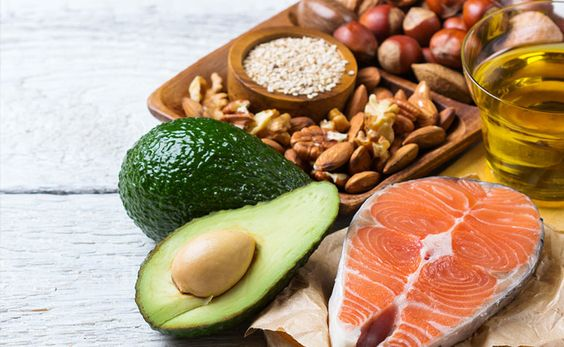
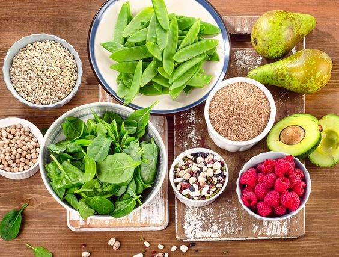

Para entendermos como devemos nos alimentar, precisamos destacar os principais nutrientes e suas origens, pois não adiantaria nada você seguir uma dieta sem entendê-la, são eles:
-
Carboidratos
Principais fontes de energia do corpo, fornecendo glicose para as células. Podem ser encontrados em pães, arroz, massas, cereais, frutas e legumes.(Florenço, 2023.)
-
Proteínas

As proteínas são macromoléculas formadas por cadeias de aminoácidos, essenciais para diversas funções no organismo, como a sustentação de células e tecidos, aceleração de reações químicas dentro do organismo, proteção contra infecções, auxílio na contração muscular e etc.(Florenço, 2023.)
-
Gorduras
As gorduras, ou lipídios, são macronutrientes essenciais formados por ácidos graxos e glicerol. Elas desempenham várias funções no corpo, dentre elas está Reserva de energia, isolamento térmico, proteção de órgãos vitais, e transporte de vitaminas.(Florenço, 2023.)
-
Vitaminas
As vitaminas são nutrientes essenciais que o corpo precisa em pequenas quantidades para manter o funcionamento adequado, melhorando sua imunidade, proteção celular, metabolismo e a saúde de seus ossos.(Florenço, 2023.)
-
Água
A água é essencial para o bom funcionamento do nosso corpo, pois ajuda na digestão, absorção e transporte de nutrientes. É crucial para a saúde dos órgãos e pode auxiliar também na perda de peso.(Florenço, 2023.)
-
Fibras
O consumo adequado de fibras é igualmente crucial para uma vida saudável pois entrega diversos benefícios ao corpo, como melhora na saúde cardiovascular, controle de açúcar no corpo e melhora da saúde digestiva. Alimentos com um alto nível de fibras são: Agrião, alface, batata-doce, maçã, feijão dentre outros.(Florenço, 2023.)
Dicas para elaborar uma dieta
Após entender sobre os principais nutrientes e suas origens, precisamos conhecer quais são os aspectos a serem considerados ao elaborar uma dieta. São eles:
-
Equilíbrio Nutricional:
A proporção certa de proteínas, carboidratos e gordura.(UNIMED. Campinas 2024)
-
Micronutrientes:
Diversidade de frutas, vegetais e outros alimentos ricos em nutrientes.(UNIMED. Campinas 2024)
-
Hidratação:
Quantidade adequada para manter a saúde e o metabolismo adequados.(UNIMED. Campinas 2024)
-
Variedade:
Inclusão de uma variedade de diferentes grupos de alimentos para uma nutrição equilibrada.(UNIMED. Campinas 2024)
-
Qualidade dos Alimentos:
Preferência por produtos frescos e minimamente processados.(UNIMED. Campinas 2024)
-
Controle de Porções:
Ajustamento nas porções para alcançar um peso saudável e atender às necessidades energéticas.(UNIMED. Campinas 2024)
-
Regularidade das Refeições:
Consistência em comer durante o dia para manter a energia estável.(UNIMED. Campinas 2024)
-
Aspectos de Saúde Especial:
Se dá por condições pessoais a adaptação dos alimentos às questões de saúde, intolerâncias ou alergias.(UNIMED. Campinas 2024)